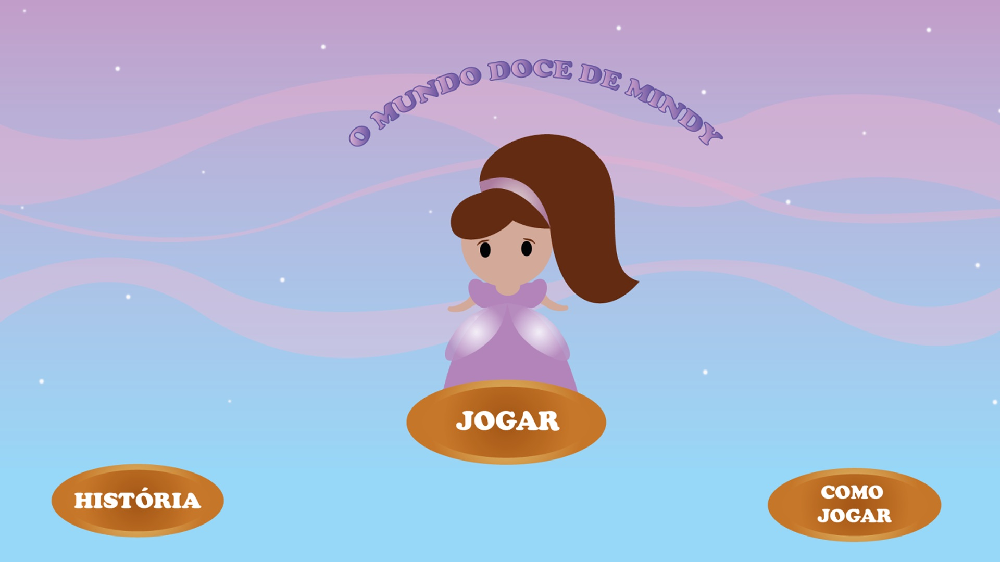
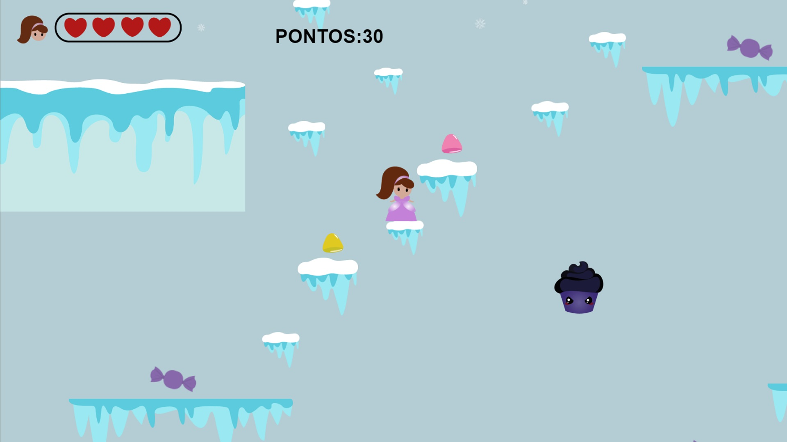
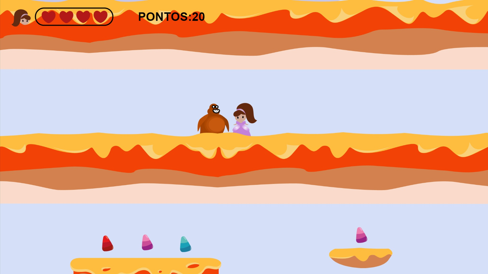

Projeto Integrador
Este webgame é o meu projeto integrador. Como todo trabalho que desenvolvemos no curso ele tem início, meio e fim. Passamos por várias etapas e aprendemos vários conhecimentos, não só nessa qualificação, mas todas as outras fazem parte do processo para chegar até aqui.
Caramelândia



Para acessar o jogo e jogar clique no link abaixo:
Acesse o jogo com este link: Caramelândia
História - O mundo doce de Mindy
Em um reino distante, onde os rios fluíam com chocolate der- retido e as montanhas eram feitas de algodão doce, existia um lugar mágico conhecido como Caramelândia. No coração da Caramelândia vivia uma jovem chamada Mindy, uma linda princesa e supertalentosa que tinha um dom especial para criar os mais deliciosos doces do mundo. No entanto, nem todos em Caramelândia eram tão gentis quanto Mindy. Dois vilões, os irmãos Gula e Gelo, cobiçavam o poder sobre todo o mundo dos doces. Gula, um gigante obeso com uma voracidade insaciável, desejava devorar e comandar tudo em seu caminho, enquanto Gelo, uma mulher de gelo com um coração frio, queria congelar o reino inteiro para que ela pudesse reinar sobre as terras geladas.